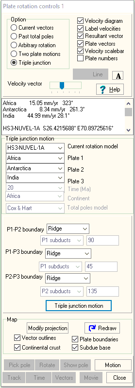

Triple Junction Computations

 Rotate continents button
on
main program toolbar.
Rotate continents button
on
main program toolbar.  Subset map to show the triple
junction you want to analyze.
Subset map to show the triple
junction you want to analyze.- Insure on the control window that:
- "Plate motions" selection in the control window is set to "Triple junctions"
- The correct plate model is selected. Some models do not include all the smaller plates.
- Pick the three plates, which must share a common triple junction.
- Pick Motion Button on control window.
- Double click on the triple junction. The rates for each plate will be displayed in the memo box, along with the model and the location.
- You can plot the vectors on the map
- If the vectors are too long or not long enough, Adjust the size of the vectors, with the "Velocity vector" slider in the top panel, redraw the map, and then reselect the point. You want the vectors to be long enough to be able to measure accurately.
- If the labels are off the graph, right click on the graph, Rescale, and adjust the axes to provide room.
- You can get a separate velocity diagram
- Resize it by dragging the lower right corner
- You can measure the relative motions between each pair of plates using the option of the graph toolbar.
-
 Option on the map to measure the
orientation of the trench, which is the only boundary for
which you need that.
Option on the map to measure the
orientation of the trench, which is the only boundary for
which you need that. - If you identify the type of plate boundary between each pair of plates, and for any trenches the orientation of the trench and subducting plate, you can get the triple junction motion.
- Compute the relative motions between each pair of plates, which can be done as graphically as vector differences on the velocity diagram.